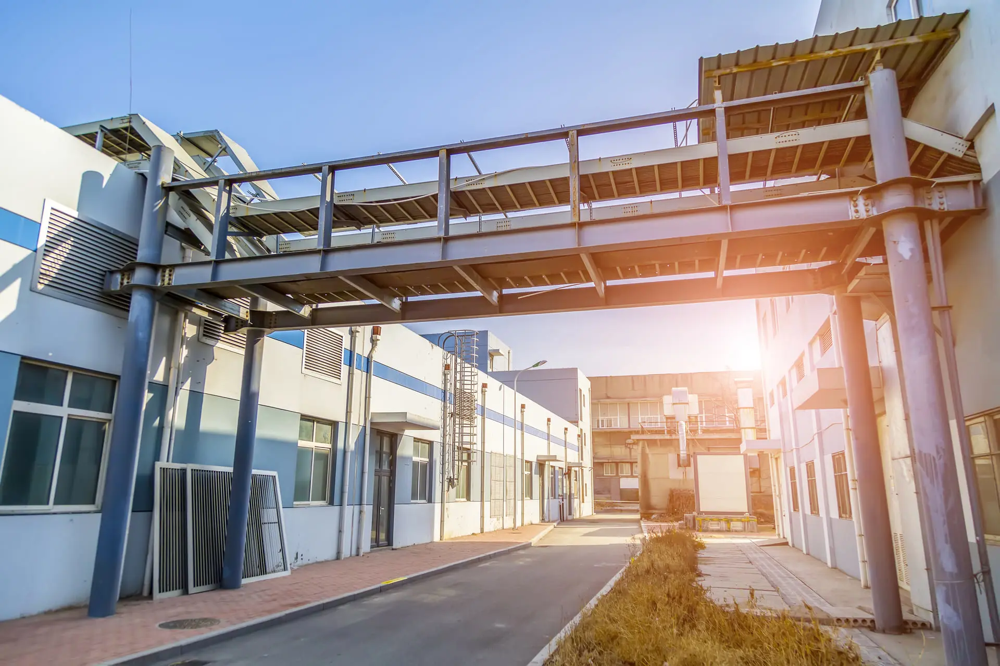

Проектирование зданий и сооружений
Сотрудники нашей проектной компании обладают знаниями и большим опытом, чтобы предложить полный перечень услуг по архитектурному проектированию, в том числе предложить удобные комплексные решения.
Компания «Инновационные Конструкции», право на деятельность которой подтверждается допуском СРО проектировщиков и другими разрешительными документами, прорабатывает всю документацию максимально подробно, чем определяется успешность строительства в будущем.
Наши специалисты оказывают услуги в Москве и Московской области, в рамках которых выполняют следующие задачи:
- определяют архитектурно-градостроительную концепцию объекта;
- проводят расчеты конструкторских и архитектурных решений в соответствии с действующими нормами;
- полностью проходят всевозможные согласования;
- получают разрешение органов контроля;
- определяют сроки выполнения работ;
- составляют сметы.
Архитектурно-строительное проектирование зданий
Выполнение такой работы требуется для зданий и сооружений, расположенных в пределах земельных участков застройщика.
Архитектурно-строительное проектирование домов включает в себя полный перечень мероприятий, направленных на подготовку документов, — от будущего архитектурного проекта до рабочих чертежей, необходимых при строительстве и дальнейшей эксплуатации объекта.
Те архитектурные объекты, для которых нужны подобные документы, причисляются и к капитальным строениям, которые требуется возвести заново.
Данная категория включает в себя сооружения и здания, требующие капитального ремонта или проведения реконструктивных работ, сюда же относятся отдельные элементы подобных конструкций, но только в том случае, если работа затрагивает несущий конструктив либо прочие критерии, имеющие непосредственное отношение к обеспечению надежности и безопасности.
Архитектурно-строительное проектирование входит в число градостроительных работ. Они основываются на предоставленной застройщиком информации:
- сведений об исследовании природных условий в пределах застройки;
- технических условий;
- подключения к инженерным сетям;
- градостроительном плане.
Последний документ составляется в соответствии с теми условиями, что описаны в технических регламентирующих актах. Если это необходимо, то дополнительно в проекте учитываются возможные отклонения от действующих элементов для строительных или реконструктивных работ.
Этот этап строительства является одним из самых ответственных, так как включает в себя несколько стадий: от разработки архитектурного решения до составления рабочей документации, необходимой строителям. В рамках архитектурного проектирования общественных зданий практикуется постоянный авторский надзор, благодаря чему даже мельчайшие задачи находят технически грамотные решения.
Для того чтобы функциональные сооружения были спроектированы по всем правилам, специалисты берут на себя решение большинства вопросов, начиная от концепции и заканчивая эксплуатацией. От того, насколько качественно будет выполнен проект, а также от контроля его выполнения на протяжении всей работы, зависит результат работы:
- эффективность и функциональность готового объекта без ущерба для выбранного дизайна;
- сроки сдачи в эксплуатацию;
- энергоэффективность;
- итоговая стоимость по смете;
- эксплуатационные характеристики.
Сотрудники нашей компании знают о том, что архитектурное проектирование зданий и сооружений требует совершенно особого подхода и тщательного анализа состояния действующих объектов.
Архитектурное инженерное проектирование подразумевает работу с водой и теплоснабжением, канализацией, электричеством, вентиляцией, сетями связи и др. Доверять данный процесс следует квалифицированным специалистам, которые не допустят каких-либо ошибок, способных помешать нормальной эксплуатации зданий в дальнейшем.
В идеале инженерные изыскания выполняются одновременно с архитектурным планированием — подобное решение способно стать своеобразной гарантией того, что все особенности конкретного объекта будут учтены, в частности, определенные сети удастся расположить максимально грамотно, с учётом архитектурных особенностей конкретной территории.
НАШИ ПРЕИМУЩЕСТВА
Реализуем объекты "под ключ"
Проектируем и строим своими силами
15 лет в строительстве Более 100 объектов
Дорожим репутацией
Этапы архитектурного проектирования зданий
Подготовка архитектурного проекта здания в Москве — работа, которая требует комплексного подхода. Разработчикам необходимо собрать исходную информацию, выполнить расчеты, составить схемы и чертежи, провести необходимые согласования.
Основные этапы архитектурного проектирования:
- Сбор исходных данных для проектирования. Включает изучение имеющейся документации, проведение инженерных изысканий.
- Составление технического задания, на основании которого будет разрабатываться проект. ТЗ предоставляется заказчиком, однако наши инженеры при необходимости могут обеспечить его правильное составление.
- Подготовка и подписание договора. В договоре фиксируются все основные условия, включая стоимость и сроки разработки. После подписания соглашения условия не меняются до сдачи проекта.
- Подготовка эскизного проекта. Прорабатывается общая концепция здания, его формы, размерные характеристики, внешний вид, планировочные решения. Эскизный проект проходит согласование в муниципальных органах для получения разрешения на строительство.
- Разработка рабочего проекта. Он включает документацию, которая используется непосредственно для выполнения работ на площадке. Рабочий проект состоит из архитектурной части, конструктивной части, инженерных решений.
- Сопровождение строительных работ. Разработчики проекта осуществляют постоянный контроль за ведением строительства. Благодаря этому итоговый результат точно соответствует проекту.
Наша компания выполняет весь комплекс проектных работ от подготовки и сбора исходных данных до осуществления авторского надзора.
Как заказать архитектурное проектирование зданий
Для оформления заказа на архитектурное проектирование здания в Москве необходимо подать заявку на разработку АП. Свяжитесь менеджерами компании «Инновационные Конструкции».
Для начала работ потребуется исходная информация о пожеланиях заказчика к будущему зданию, в том числе: ориентировочная площадь, этажность, примерная планировка и площади отдельных помещений, материалы стен, полов, кровли, перекрытий, других частей конструкции строения, общие пожелания к архитектурной концепции и цветовым решениям. Также желательно предоставить примерный эскиз здания. Если вы не определились с этими параметрами или с частью из них, проработать заявку помогут наши архитекторы.
Для начала проектирования промышленного или коммерческого здания, потребуются такие документы:
- кадастровый план участка;
- градостроительный план участка;
- результаты инженерно-геодезических изысканий;
- результаты инженерно-геологических изысканий.
Если вы не заказывали ранее изыскания на участке, наша компания организует их проведение.
Разработка архитектурного проекта здания. Порядок работы с архитектурным проектом
Работа над составлением архитектурного проекта здания состоит из таких основных этапов:
- Сбор исходных данных для проектирования.
- Составление технического задания.
- Подготовка и подписание договора.
- Разработка эскизного проекта.
- Разработка рабочего проекта.
- Сопровождение строительства.
Рассмотрим подробнее каждый из этапов архитектурного проектирования.
Сбор исходных данных для проектирования
Источником исходных данных для архитектурного проектирования является документация, предоставленная заказчиком, результаты геодезических и геологических изысканий. К основным данным относятся:
- сведения о размере, геометрической форме участка;
- информация о минимальных отступах от границ участка;
- технические условия присоединения здания к инженерным сетям;
- состав и характеристики грунта на участке строительства;
- данные о перепадах высот.
Кроме этого, для разработки используется информация заказчика о требуемых характеристиках и параметрах объекта строительства. При необходимости изыскания и инженерные обследования участка проводятся специалистами нашей компании.
Составление технического задания
Техническое задание — основной документ, на основании которого осуществляется архитектурное проектирование. Он составляется заказчиком. В техническом задании сводятся все основные требования к объекту.
В том числе, в техническом задании приводятся следующие основные сведения:
- общая площадь помещений здания;
- количество этажей строения;
- высота каждого этажа;
- число отдельных помещений и их площадь;
- назначение здания и отдельных помещений: жилое, промышленное или офисное здание;
- материалы фундамента, несущих стен или каркаса, перекрытий, других несущих конструкций;
- тип, особенности конструкции крыши, ее форма;
- высота здания;
- высота цоколя;
- необходимость устройства, характеристики и параметры балконов, террас, веранд;
- материалы, применяемые для облицовки фасада, внутренней отделки;
- стилистические решения фасада и интерьера.
Кроме этого, в ТЗ может указываться много других параметров, которые должны быть учтены при проектировании.
Если заказчик испытывает затруднения с подготовкой технического задания, разработать этот документ помогут инженеры компании «Инновационные Конструкции».
Подготовка и подписание договора
После анализа исходных данных и полученного технического задания определяются сроки разработки и стоимость архитектурного проекта. Все параметры согласовываются с заказчиком, после чего мы составляем договор на проектирование здания.
В договоре четко прописываются все основные критерии и обязательства разработчика проекта. В том числе, указывается крайний срок завершения разработки, обязательства по качеству и соблюдению требований нормативной базы и т.д. В договоре фиксируется рассчитанная стоимость архитектурного проектирования, которая не повышается в ходе разработки. Также прописываются гарантии заказчику со стороны разработчика.
Сразу после подписания договора мы приступаем непосредственно к разработке пакета проектной документации.
Разработка эскизного проекта
В первую очередь разрабатывается комплект документации, входящей в эскизный проект. В его состав могут входить такие документы:
- генеральный план строения;
- пояснительная записка, включающая основные сведения о будущем здании;
- поэтажные паны;
- чертежи фасадов;
- архитектурные разрезы;
- план кровли;
- 3D-визуализация здания и т.д.
В комплекте документов эскизного проекта определяется общая концепция и внешний вид объекта, его формы и размеры, зонирование и планировка, прорабатываются объемные и пространственные решения.
На стадии разработки эскизного проекта разработчик активно работает во взаимодействии с заказчиком. Благодаря этому учитываются все пожелания, которые удается воплотить в архитектурном проекте. Эскизный проект используется для получения разрешительной документации в органах местной власти. Кроме этого, он дает заказчику наглядное представление о том, как будет выглядеть здание и внутренние помещения. Эскизный проект утверждается заказчиком, после чего на его основе разрабатывается рабочий проект.
Разработка рабочего проекта
Основным этапом архитектурного проектирования является разработка рабочего проекта. На этой стадии подготавливается комплект документации, на основании которой непосредственно выполняются строительные работы.
В состав рабочего проекта входят следующие части:
- Архитектурная часть. Это комплект документов, в котором сводятся в окончательном варианте все чертежи, планы, схемы. В архитектурном проекте учитываются требования и пожелания заказчика, а также нормативные требования. Обязательно учитываются архитектурно-художественные, технические, экологические, социальные, экономические и другие критерии.
- Конструктивная часть. В этой части объединяются архитектурный и конструктивный расчеты. Обязательно учитываются несущие способности опорных элементов конструкции здания. Выполняются расчеты максимальных нагрузок, воздействующих на несущие стены, перекрытия, фундамент. Разрабатывается схема стропильной системы крыши (при использовании скатной кровли). На основании расчетов подбираются материалы, комплектующие, крепеж, составляются спецификации.
- Инженерные решения. Обязательным этапом является разработка инженерных решений, необходимых для жизнеобеспечения здания. В том числе в комплект документов включаются схемы систем отопления, водоснабжения и водоотведения, газоснабжения, электроснабжения, вентиляции и кондиционирования и т.д. Разработчик предусматривает максимальную эффективность и функциональность инженерных систем. Кроме этого, инженерные решения предусматривают сохранение эстетики фасадов и помещений здания.
После утверждения рабочий проект передается строителям и служит для них директивным документом для выполнения строительно-монтажных работ.
Сопровождение строительства
В рамках сопровождения строительства осуществляется авторский надзор разработчиков архитектурного проекта за ведением работ по возведению здания. Надзор направлен на обеспечение соблюдения всех положений проектной документации. Благодаря этому исключается возможность отступления подрядчика от проекта. Кроме этого, на нашем сайте можно рассчитать стоимость постройки автосервиса и вентилируемых фасадов из композитных панелей, что нередко пригождается во время проектирования.